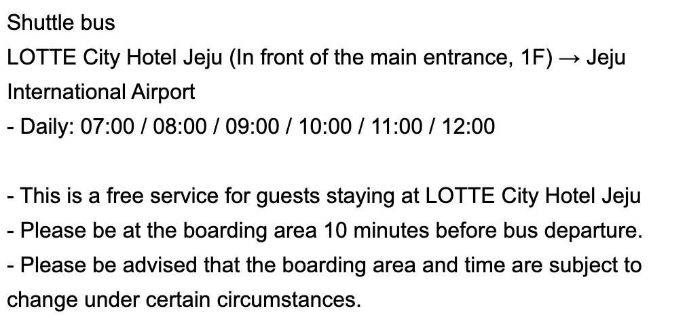

航班 19:15 落地。出關後到機場內 Gate 2 樂天租車櫃檯報到。順利的話約 20:30 上路、20:45 到連洞飯店。
- 預訂編號
- 2622398788MozLotte
- 車款
- SELTOS 4WD (G) 5P汽油・小型 SUV・4WD 底盤穩
- 保險
- CDW 零自負額全險 ✅Zero Excess・濟州必保
- 取車
- 6/17（三）20:00
- 還車
- 6/19（五）20:00
- 地點
- Jeju Auto House용해로 92・龍潭（取＝還同地）
- 租金
- 115,700 KRW現場刷主駕本人卡
- 機場內 Gate 2 樂天櫃檯報到確認抵達。（清晨 6 點前沒人上班，可直接走 Gate 5）
- 從 Gate 5 出來過馬路往右走，沿「렌터카 셔틀버스（租車接駁）」指標到接駁站，認 紅色 LOTTE logo。
- 搭免費接駁車到龍潭取車中心，車程約 30 分。5–20 分一班，07:00–23:00（6 點前抵達先電 064-751-8000）
- 抽號碼牌選「Foreigners 外國人」→ 出示證件 → 約 10 分完成手續。
- 取車前自己先把車身四周拍照／錄影存證（刮痕、油量），保護自己。


- 台灣駕照正本
- 國際駕照正本
- 護照（拼寫一致）
- 主駕本人信用卡
機場 → 連洞 約 10–15 分鐘。導航用 Naver Map（中文介面，比 Google 準、有測速提醒）。濟州靠右行駛、限速嚴格，慢慢開最安全。
地址：연삼로 14（＝연동 290-3）。放好行李、稍微梳洗，出門吃晚餐。
📍 Naver 搜：제주특별자치도 제주시 연동 290-3
⚠️ 옛날아우내순대 L.O. 只到 20:30，21:00 到來不及——它是別天的午餐選項，不是第一晚的選擇。
先到 Ventimo 退房、行李全上車（今晚改住連洞的樂天城市酒店）。
連洞 → 山茶花之丘約 40–50 分。
夏季限定天藍色繡球花，溫室內＋溫室外粉藍繡球花牆都必拍，下雨也能逛溫室。停約 1.5–2 hr。
📍 Naver 搜：카멜리아힐
山茶花之丘 → Manor Blanc 約 15–20 分。
7,000+ 株、30+ 品種繡球花，邊喝咖啡邊賞花，遠眺山房山＋海。可吃輕食當午餐。
入場規則：1 人 1 飲料 or 入場費 4,000 韓元。
📍 Naver 搜：마노르블랑
Manor Blanc → Cafe Lucia 約 10–15 分。
박수기정柱狀節理絕壁海景就在眼前，室內／戶外／頂樓都看海。和 Manor Blanc 剛好「一個看花、一個看海」不重複。老闆自承「飲料甜點普通、主打看海拍照」，當打卡點別期待餐點。
📍 Naver 搜：카페루시아
Cafe Lucia → OSULLOC 約 15 分。
一望無際綠茶園，綠茶冰淇淋＋綠茶蛋糕必點；旁邊 Innisfree Jeju House 可逛。室內為主、雨天友善。
OSULLOC → 涯月約 30 分。
涯月海岸咖啡街逛逛、拍照。
移動到 Haejigae 只要數分鐘。
애월북서길 54，夕陽超美的海景咖啡（老婆 IG 點名）。今晚車在手上、不用趕還車，可以卡位待到日落（約 19:40）看完整個夕陽再走。
📍 Naver 搜：해지개
涯月 → 連洞約 40–50 分。
回連洞入住 樂天城市酒店（連洞 2324-6），晚餐殺去黑豬肉一條街／連洞名店。之後連洞逛街：Olive Young、樂天免稅店（就在酒店內） 🛍️
📍 Naver 搜：롯데시티호텔 제주
樂天城市續住、行李留房間不用搬；今天傍晚要還車。早上要跑 3 站名店，07:50 出門。
連洞 → 오드랑 約 50 分。
濟州三大麵包店，蒜香法棍（마농바게트）招牌。抓 09:00 開門前到，進去買了就走、外帶最省時。
📍 Naver 搜：오드랑베이커리
오드랑 → London Bagel 約 15 分。
全韓最紅貝果，正隔壁就是 Cafe Layered（可愛蛋糕＋海景）。貝果（鹹）＋蛋糕（甜）外帶一次帶齊。⚠️最會排，建議前一晚先掛 Catchtable遠端候位，到了直接拿。
📍 Naver 搜：런던베이글뮤지엄 제주
→ Blue Bottle 約 15 分（往內陸小繞）。
藍瓶咖啡濟州店，松堂里林間空間。外帶咖啡收尾，戰利品全部帶上車。
📍 Naver 搜：블루보틀 제주
Blue Bottle → 終達里 約 25 分。
東北海邊露天繡球，海＋花同框最夢幻，免費。車上把 3 家戰利品當早餐、邊吃邊賞花。路邊拍照小心來車。
📍 Naver 搜：종달리수국길
終達里 → 城山 約 20–25 分。
世界遺產火山口，登頂約 30 分。遇雨不想爬就改走海邊展望台看海（一樣很美，不硬爬）。
📍 Naver 搜：성산일출봉
城山 → 午餐點 5–10 分。
城山腳下海鮮，京美家 海女現撈或三姓穴海鮮湯 城山店二選一（詳見下方）。怕排隊選翻桌快的京美家。
午餐 → 休愛里 約 40 分。
濟州最有名的繡球花節場地，會隨土壤酸鹼變色（粉/藍/紫/白），還能餵濟州黑豬、看黑豬秀。園區大、部分有遮蔽，雨天仍可逛。這站抓 1 小時，留時間採買＋還車。
📍 Naver 搜：휴애리
休愛里 → 西歸浦市場 約 20–25 分。
西歸浦市中心最大傳統市場，620m 頂棚拱廊、雨天照逛。買蜜柑紅豆年糕（오메기떡）、橘子、文青小物。⚠️晚餐回連洞吃黑豬，這站不吃正餐、留肚子（夜市 17:00 才開，16:40 就要上車趕還車，吃不到也沒關係）。
📍 Naver 搜：서귀포매일올레시장
西歸浦市場 → 龍潭 Auto House 約 1 小時（跨島南→北）。
開車回 Jeju Auto House（용해로 92・龍潭）還車，先加滿油、拍車況存證，約 10–15 分。
📍 Naver 搜：용해로 92
還車 → 計程車回連洞。
計程車回連洞放行李，用 Catchtable App 掛號候位（熟成到排隊兇，先掛免乾等）。
老婆已訂位。交叉熟成黑豬肉、店員代烤。餐後逛 Olive Young、樂天免稅店買齊免稅品（明早無車）。
📍 Naver 搜：숙성도 노형본점
連洞的 제제김밥 買韓式飯捲外帶（07:00 開、種類多、不用排隊），回房當早餐、邊吃邊收行李。
📍 Naver 搜：제제김밥
行李清點完成、退房，準備在門口叫計程車。
樂天城市酒店住客免費接駁車直達濟州機場，從 1F 正門口上車。整點發車：07:00 / 08:00 / 09:00 / 10:00 / 11:00 / 12:00。配合 10:50 航班，搭 09:00 那班剛好（約 09:15 到機場，留 ~1.5 小時報到）；想更寬裕可改搭 08:00 那班（需先退房）。
⏱️ 發車前 10 分鐘到上車處候車。上車地點／時間飯店可能臨時調整，前一晚先跟櫃檯確認。

國際線 3 樓 check-in → 出境審查 → 安檢。搭 09:00 接駁約 09:15 到，扣掉流程逛免稅店約剩半小時；想多逛一點就改搭 08:00 接駁／計程車提早到。
10:50 起飛，12:15 抵達高雄。濟州賞繡球之旅平安落幕 🌺